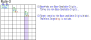
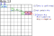

～～～ 学習中のため 暫定版 ～～～
ウェブサイトとGNPX開発は並行して進めているため、両者に不整合なことがあります。最新の情報は、GNPXです。
本ページは
by:David P Bird "JExocet Compendium"
http://forum.enjoysudoku.com/jexocet-compendium-t32370.html
に基づています。
ほとんどは "このページの再整理、いくつかのオリジナルを追加"です。
この文書は、読み込み、理解が進むほどに、示唆に富んでいます。(未だに学習中)
David P Bird に大いに感謝です。
-
Junior Exocet(JE)
- JE2
- JE2+,JE++
- JE1 Senior Exocet(SE)
- SE standard
- SE single
- SE singleBase
- SE jelly
Exocetの基本
Exocetは、他のアルゴリズムとは"異なるタイプのLocked"であり、魅力的で奥が深いアルゴリズムです。
適用する局面や、除外できる数字パターンも多彩であり、Exocetのみで解ける局面もあります。
数独パズルを解く 新しい強力なアルゴリズム が加わったことから、解析アルゴリズムの新たな方向性が開けました。
さらなる新しい手法の発見を予見させます。
Exocetには、基本的で素朴なタイプから拡張タイプまで 様々な種類があり、Exocetはそれらの総称です。
Exocetは、やや複雑な論理を使うので、2つの段階で解説します。本 page は 第1段階の Junior Exocetについてです。
第2段階 Senior Exocet では、Exocetの仕組みを解説します。
用語を含め 第1段階(Junior Exocet) の知識を持つなら、第2段階(Senior Exocet)の理解は容易でしょう。
また、Exocetの納得感も得られるでしょう。
... JExocet sample
JExocet の定義 ... JE2の場合
JExocetは、Base、S領域、Target の関係 による Locked です。
Baseの2セルには、2つ以上の候補数字があります。2つならLockedSetなので、3つ以上とします。
JExocet Locked : 候補数字からどのような2つの数字を選んだとしても、それらは T1 と T2 で肯定となる。

JExocet Locked は、以下に示す "形の定義"と、"候補数字の条件" に基づいています。
(1) JE2 形の定義
Exocet には、複数の役割のセルがあり、次の図のように配置されます。
- Targetセルの配置には、対角形（Diagonal）と整列形（Aligned）の2タイプあります。
- Companionセル、Mirrorセルは、Targetセルの位置に連動して配置されます。
- Escape(*)は、Base 候補数字が存在しないセルです。

* Exocet の仕組みの理解には、"方向" を区別すると良いでしょう。
"Baseの並び"を基準として、これと並行の方向は "Paralle"です。
また、これと交差する方向は "Cross" です。文脈から明らかなときは、これらはしばしば省略されます。
JExocetの形は、次の手順で導きます。これらは、JExocetの解法コードを作成する上でも参考になります。
- ステップ1: 盤面上の一つのセル(Stemセル)と、方向(行、列)を選ぶ。これによって、mini-lineが決まる。
mini-lineの2つのBase(B1,B2)セルと、Band、2つのブロック(Block1,Block2)が定まります。 また、Stemセルと方向から、Cross-Line-b(S0)が定まります。*mini-line は、ブロック内の行または列の3セル。
*Stemセルは形を導くためのもので、Exocetの定義やロジックには関わりません。 また、Stemセルは、確定/未確定のいずれでも選べます。
- ステップ2: ブロック1,2にあり Baseに連結しないセルは、それぞれ6セルあります。各ブロックから、数字未確定の Target セルを選びます(T1,T2)。
方向と Targetセル(T1,T2)から、Companionセル、Mirrorセル、Cross-Line-x、S1, S2 が定まります。 これらのセルは、確定/未確定のいずれの状態もあります。

(2) JE2 候補数字の条件
JExocet の形の定義のもとで、Base数字について、次の条件(R1～R4)をテストします。
テストをクリアする数字が 2つ以上あるとき、R1～R4条件を満たす候補数字に関して Locked となります。
また、R1～R4条件を満たす候補数字は "Locked 数字" と表記します。
JE2 候補数字の条件
| R1 | Baseセル(B1,B2)は、いずれも未確定セルであり、同じ数字を含み、合わせて3以上の Base 数字(#abc/#abcd)をもつ。 |
| R2 | Targetセル（T1,T2）は、いずれも未確定セルであり、合わせてBase数字を2つ以上もつ。 |
| R3 | Companionセルは、Base 数字を含まない。 |
| R4 | 全てのBase数字について、S領域{S0,S1,S2}にある "問題、解決済み、候補値"のBase数字は、2つの Cover-Line でカバーされる。 |
これらの条件について、若干、補足して解説します。
補足:
| R1 | Baseセルの Base数字 が 2つの場合は LockedSet です。5以上のケースは、"制約が多くなり、おそらくないであろう"という予測によります。 これより、R1は"3～4の Base数字"となっています。 |
| R2 | Base数字以外の候補数字を含んでよい |
| R3 | Companionセルは、確定セルと未確定セルの場合がある。 |
| R4 | S領域にあるのが"確定、解決済み"の場合は、"Parallel/Cross Cover Line" いずれにも解せます。 (以下では、"Paralle"を採用します) |
| - | Mirror には、Locked に関する条件はありません。 Base数字が Locked しても、これは "解の可能性あり" 状態です。 Base-Target-Mirrorの Base数字、非Base数字の配置によっては、不合理な状態となることがあります。 |
2つ以上のBase候補数字が R1～R4 を満たすなら、JExocet Locked が成立します。
以下の除外は、数字の位置・数を調べて、不合理な状態や 候補数字を探し、除外します。
(3) JExocet の論理 ... Lockedの証明
R1～R4を満たすBase数字は、Locked です。
Base候補数字から任意の2数字を選択したとき、この2数字について次の命題が成り立ちます。
命題 : Baseで positive なら、Target1 と Target2 でも positive である。
- JE2 Lockedの証明 (CL:Cross-Line)
- L1. Baseセルで、ベース数字#ab は positive とする。
- L2. CL-b,CL-1,CL-2には、#abのインスタンスがそれぞれ 3つあり(数独のルール)、合わせて6個のインスタンスがある。
- L3. R4より、Sセル(S0,S1,S2) には 2つの #a CoverLine、2つの#b CoverLine がある。
- L4. "6-4=2"より、CL-1,CL-2の Band領域には #aと#b のインスタンスがある。
- L5. #aと#b インスタンスは、Escape、Companionにはないので、それぞれ Target1 と Targe2にある。(どちらにどれかは確定しない）
* この証明は、次の サイト/投稿 によります。
SudokuWiki.org
https://www.sudokuwiki.org/exocet
... by: Anonymous Saturday 8-Jan-2022
* 命題の真偽と区別するために、命題の内容表現では positive/negative を用いています。

除外
ここからが、Exocet の “転”であり、ダイナミックで醍醐味のある部分です。
除外リスト 1～12 は、Bird 文書に挙げられたもので、番号と条件は元文書に倣っています。
Bird 文書でも述べられているように、除外ルールの適用には 前提条件があることに注意が必要です。
(偽の論理式からはどのようなことも導けます。)
- [JExocet Locked] JExocet の R1～R4 が成立したとき(Locked digits) :
Baseの任意の数字(#a)選び、positiveと仮定するなら、#a は Target で positive となります。
Lockedの場合には、Target候補数字に "Locked数字ではあるが、非確定数字"も含むため、 Base-Target-Mirror の制約関係は確定していません。従って、Target-Mirrorに関する除外ルールは適用できません。
なお、次の推論(対偶)は成立します。
Baseの任意の数字(#a)選んだとき、Targetで #a が negative なら、#a は Base数字 ではない。 - [2-Digits Locked] ベースの2数字が確定したとき(Determined digits) :
ベースの2数字が確定すると、Target 数字も確定します。その他のベース候補数字は negative になり、Target でも negative に確定します。 (どちらの数字がどちらのTargetかは確定でない)。
また、Base-Target-Mirror が制約関係となり、以下の除外ルールが全て適用できます(Mirrorに関する除外ルールが適用できる）。
除外-1 [JExocet Locked]
JExocet の R1～R4 が成立したとき、適用できる 除外ルール です。
-
E1. ベース数字 #a について、Sセル(S0,S1,S2)のカバーラインが1つのケースでは、 Baseセル(B1,B2)、Target (T1, T2)で #a は 除外 できる。
CoverLineが2つの Baseの候補数字が 2つ以上あり、これによって JExocet Locked は成立しているとします。 この他に Baseに CoverLine が1つの 候補数字 #xがあれば、#xは除外できます。
CoverLineが2つの 候補数字が Target を占有するので、CoverLine が1つの候補数字に余地がなくなります。 -
E2. 少なくとも1つのTargetとそのMirrorで同時に 肯定 になれないベース数字は、除外できる。
"JExocet Locked"の Base数字#a に着目すると、少なくとも1つの Targetに #a がある。 Target に対応する Mirror に #a がないなら、#a は Base数字ではない。
-
E3. Target内の 非ベース数字は 否定である。
Exocet Locked 状態なら、Targetには いづれかの ベース候補数字が入ります。したがって、非ベース数字が Target に入る余地はありません。
 -
E4. ベース数字が Target で 肯定 となることが確定なら、他方の Target では 否定 である。
それぞれの Target には異なるベース数字が入る。 一方の Target で positive になることが確定なら、他方の Target では negative になる。
Object の 2セルに確定した数字があるなら、スコープにある数字は除外される。

-
E5. Cross Cover-Lineをもつベース数字は、対応する Target で 否定 である。
これは、次のように導けます。- (1) S1に #a の Cross-Cover-Line があるとします。
- (2) 命題:T1で Base候補数字#a は positive とする。
- (3) Baseの#aは positive。
- (4) S0には #a インスタンスがある。
- (5) S2には #a インスタンスはない。
- (6) T2には +#a がある。
- (7) T1#a と T2#a は矛盾する(他のBase数字がTargetに配置できない)。
従って、(2)命題は偽であり、T1の #a は negativeである。

-
E13. Target で数字が肯定に確定したら、それは Base 確定数字である。Mirrorの一方のみにその 確定数字があれば、それは確定であり、その他の数字は除外される。
Target で数字が肯定に確定したら、対応する Mirror にはその数字が入る。その数字が一方の Mirror にのみあればそれは確定し、その他の数字は除外できる。

除外-2 [2-Digits Locked]
除外-2は、Base 候補数字の2数字が確定したときに適用できる除外ルールです。Baseの2数字が positive であることが確定し、Target で positive であることが確定した状態です。 これは、局面の最初のときもあり、また除外ルールを適用した結果のときもあります。
E6. Targetに対応する Mirror で肯定にできない ベース数字は、Targetでは 否定 である。
JExocet の定義により、命題：Target で肯定のベース数字は Mirror でも肯定 が成り立つ。Rule-6は、この命題の対偶です。
Mirrorセルは、確定値のこともあります。ベース数字と異なる確定値の場合に、この条件に合致します。
E7. Mirror Cellの1つに、対応するTargetにあるベース数字が含まれないなら、 同じ Mirror の他方の Cell に、対応するTargetにあるベース数字が含まれる。
Mirrorの位置と、Base、Targetの影響圏から、Mirrorには Targetにあるベース数字がある。ベース数字が M1A にないなら、M1B にある。 したがって、M1B から 非ベース数字は除外できる。

-
E8. "ベース数字 が確定しているとする。" Mirror Cell に 非ベース数字 が1つ含まれるなら、 それは 肯定 である。
Mirror セルには、ベース数字と、非ベース数字が含まれます。
ベース数字 が確定したとする。- Mirror に含まれる非ベース数字について、
- 1セルなら : 非ベース数字は確定し、これを参照するセルから非ベース数字 から除外できます。
- 2セルなら : 2つの Mirror を共通して参照するセルから非ベース数字 から除外できます。

-
E9. Mirror に Locked された数字があるとき、その数字がベース数字なら他のベース数字は Mirror では 除外できる。 あるいは、その数字が非ベース数字なら他の非ベース数字は Mirror から 除外できる。
Mirror には ベース数字と非ベース数字が入ります。
Mirror に ロックされた数字があるとき[Mirror_Locked]、ベース数字と非ベース数字の両方を入れるためには、ロックされた数字の制約が生じます。
2つの Mirror セルに ベース数字を2つ配置することはできません。 同じように、非ベース数字 を2つ配置することはできません。- Mirror_Locked された数字が ベース数字であり、かつ、
Base_Locked のとき、
Mirror内の 他方の ベース数字 は 否定 である。 - Locked された数字が 非ベース数字 のとき、 Mirror内の 他方の 非ベース数字 は 否定 である。
なお、E9 の前提条件 "Locked" は ALS(2つのセルに1数字)であり、下図のグレイ背景のセルに 着目する数字(#x)がない状態です。 除外条件と組み合わせて、"Locked"になります。

[補足]
数独ルールの"行・列・ブロック 制約"と"数字1～9 制約"は同等で、"行・列・ブロック・数字 制約"です。
General Logic は、これに基づく解析アルゴリズムです。
ALS(Almost Locked Set) は、"n セルに n+1数字"が一般的ですが、"n+1 セルに n数字" も "ALS" です。 - Mirror_Locked された数字が ベース数字であり、かつ、
Base_Locked のとき、
-
E10. 既知のベース数字は、2つの Base の影響圏 あるいは 2つの Target の影響圏では 除外できる。
既知のベース数字とは、Base cellsで 肯定 なことが確定した数字です。例えば、2セルに2数字 すなわち LockedSet は既知の状態です。 2つの Base は 肯定 に確定しているので、その影響圏では 否定 になります。 また、ベース数字が既知であれば、Target は 肯定 となり その共通の影響圏では 否定 になります。
-
E11. Cross-Line の Escape Cell に 1回しか現れない数字は、その Cover houseの ”S” 以外のセルでは 否定 である。
Bird 文書の11項 を修正している。確定したベース数字についての除外は 12項 とした。
本項の対象とする数字は、"JExocetの解候補の1つである" ことが条件である。無制限にこのルールは適用できない。
- (1) #abx JExocetの解候補とする。
- (2) #abが解と確定したなら、#x は解でない 。このとき、#x は Escape にある。
- (3) #xは JExocetの解候補なので、jExocet の条件(Base,Target,Sの関係）は有効である。
- (3) Base ブロックの Escape にある#xが一つなら、それは Positive である。
- (4) CrossLine-1,-2の Escape にある#xが一つなら、それは Positive である。

-
E12. 2つのベース候補数字が肯定に確定したなら、S領域で2つのインスタンスが 肯定 となるのを妨げる数字インスタンスは、否定 である。
2つのベース候補数字(#ab)が肯定に確定したとする。- (1) T1=#a とする。S1に#aはない。
- (2) 基本ルールにより、S0には#aは1つある。
- (3) 候補数字の条件:R4 により、S領域の候補数字は 2つの Cover-Line で覆われている。S2には#aがある。
- (4) Cover-Line の S領域外にある要素(▲)は、Cover-Line条件(R4)の成立を妨げる。
(PCL-{S})#a is negative (PCL:Paralell-Cover-Line, -:差集合)

CrossLine-1,-2
除外-3
除外-3 は、2つのベース数字 による 除外 です。Bird の文書では, "Incomtible Base Pairs" の項です。
2つの Base にある 候補数字 は、自由な組み合わせで ベース数字の候補にはなりません。
例えば、Baseの 候補数字が(1,2,3)であれば、{(1,2),(1,3),(2,3),(2,1),(3,1)(3,2)}の組み合わせがあります。
また、2つのBaseの候補が異なる場合には、可能な組み合わせのパターンになります。
これらの組み合わせに対して、それぞれをテストします。Exocetの性質から、次のことを用います。
- テスト対象の Base数字 は、それぞれTarget にある。
- 2つのBase数字のインスタンスは、S0にある。インスタンスは確定済みのこともある。
- 2つのBase Cellの 2つのCross-Blockには、候補状態の Base数字がある。
- Case-1:2つのBase数字のS0におけるインスタンスが、同じセルになる。
このパターンは数独解としてあり得ないので、この組み合わせパターンは除外できる。 - Case-2:2つのBase数字のS0におけるインスタンスが、同じ Cross-Block にある。
このパターンは、Cross-Block のBase数字を全て排除する。
もう一つの Cross-Block には何も影響しません。
したがって、この組み合わせは Baseと UR の関係になり、
数独解の唯一性から、この組み合わせパターンは除外できる。 - Case-3:2のBase数字のS0におけるインスタンスが、異なる Cross-Block にある。
このパターンは、それぞれの Cross-Block で それぞれの Base数字 を排除する。
この場合は、Baseと UR にはなりません。
したがって、この組み合わせパターンは解の可能性が残る。
"除外-3" はベース数字組み合わせの不適格なものを検出します。これにより、"既知のベース数字" を更新します。
これにより、除外ルールの適用できる箇所が拡大することがあります。
この理由で、GNPX では "除外-1,2"よりも先に、"除外-3"をテストします。